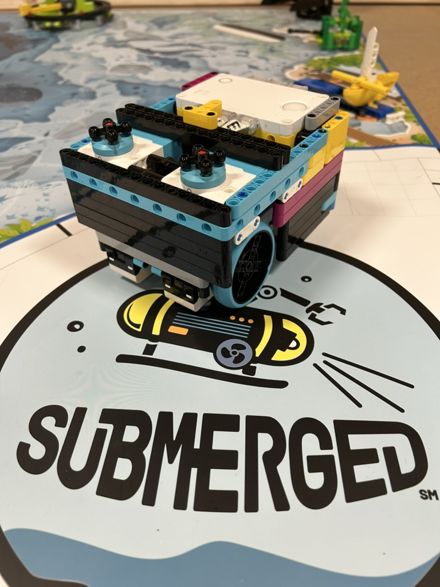
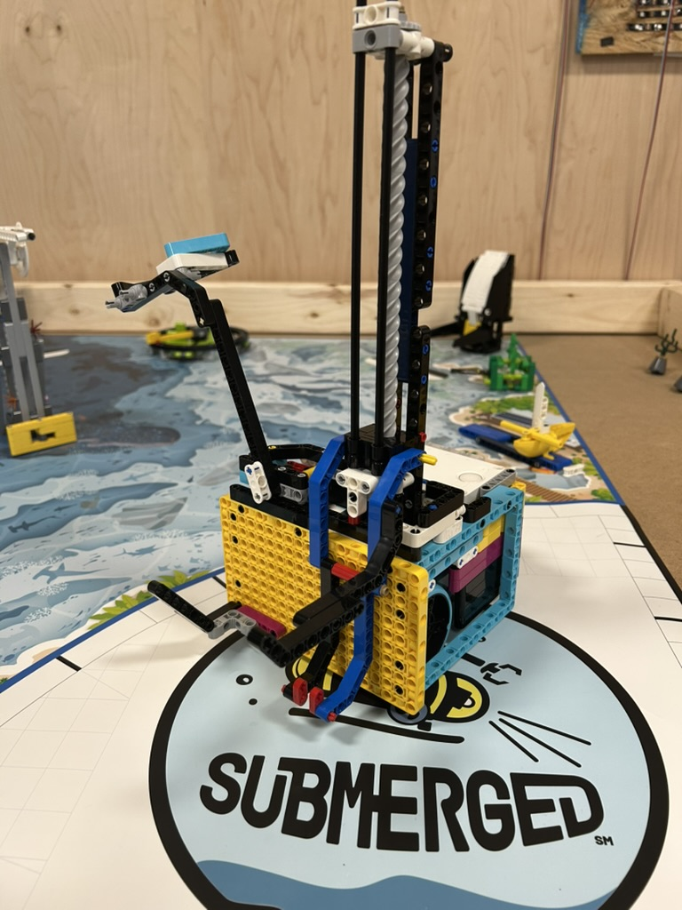
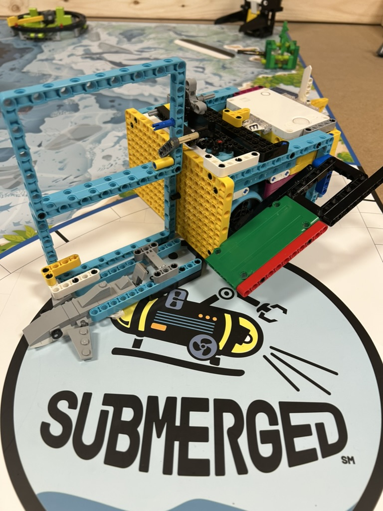
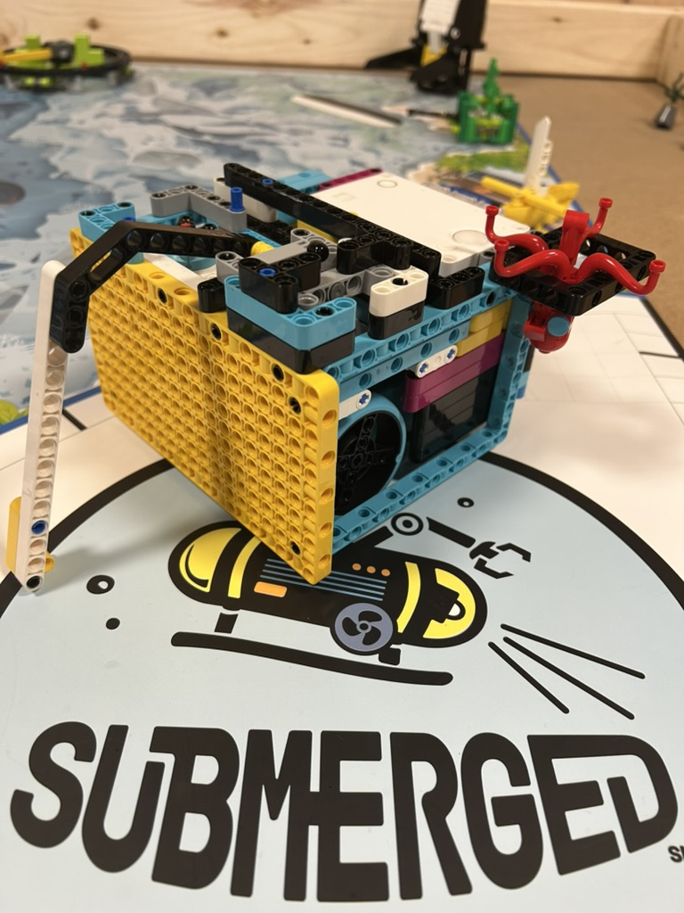
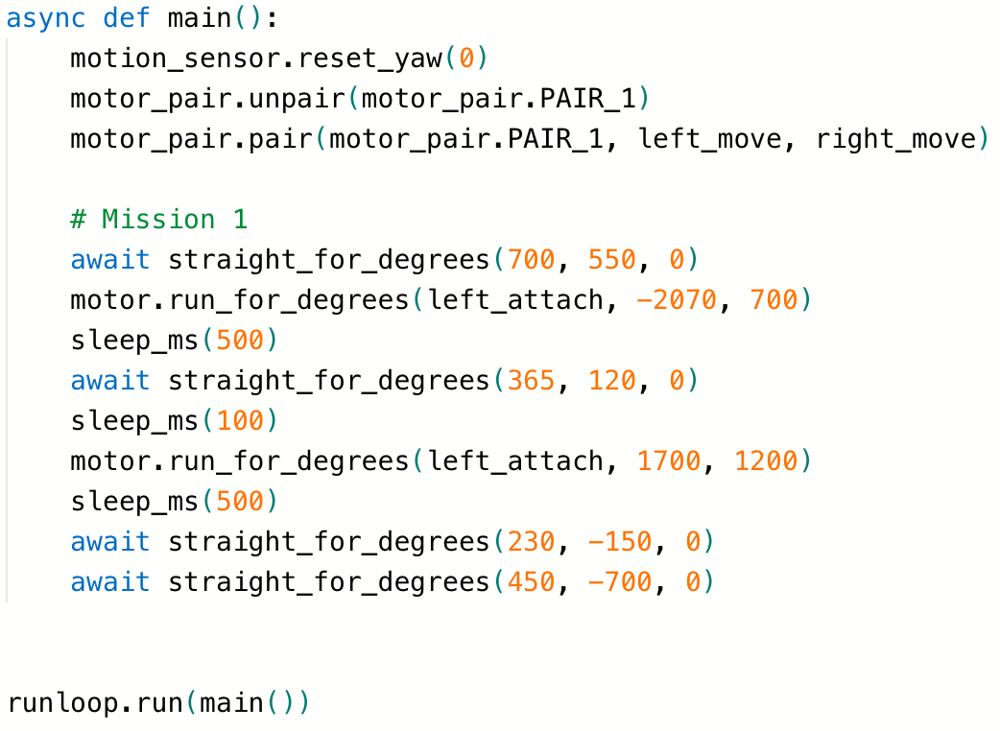

Welcome to Roboducks
FIRST LEGO League Team - Submerged Season 2024-2025
About Us
Our Mission
We are a passionate team of young innovators exploring robotics and engineering through FIRST LEGO League.
Achievements
Meet Our Team

Our team consists of five members: Theo, Grayson, Ryan, Jacob, and Ozzy. Unfortunately, Jacob and Ozzy are not able to make it to today's competition. We are all passionate about robotics and engineering, and we are committed to making a difference in the world through our work.
Innovation Project
Submerged Challenge Solution

As a team, we have a challenge to address the problem of ocean pollution. We are working on a solution that would help reduce the amount of plastic waste in the ocean. We took inspiration from the Ocean Cleanup Project, which was a successful project that reduced the amount of plastic waste in the ocean by 80%. The Ocean Cleanup Project discovered that over 70% of the trash in the Pacific Garbage Patch comes from only ten rivers, so we decided to hit the problem at the source. We decided to create a gadget that can attach to the back of kayaks or other boats, and as the user paddles the boat, the gadget will automatically collect plastic waste.
Robot Game
Our Robot
   We improved from last time, adding a modular attachment system to the robot. This makes it easier to add and remove attachments from the robot. We also reused Mission 11 (the tower) from last year's FLL Masterpiece Challenge to make our first attachment, a forklift desgin. The image for the current forklift design is from a few weeks ago, and we've actually changed our design in those few weeks, so the image for the forklift design is slightly outdated.
Our Code
Originally, we used block coding, but last year we decided to switch to Python. This year, we upgraded again and used the built-in gyro sensor on the robot to make the robot more accurate.